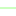

<!doctype html>
<html lang="en">
    <head>
        <meta charset="utf-8">
        <meta http-equiv="X-UA-Compatible" content="IE=edge">
        <meta name="viewport" content="initial-scale=1,user-scalable=no,maximum-scale=1,width=device-width">
        <meta name="mobile-web-app-capable" content="yes">
        <meta name="apple-mobile-web-app-capable" content="yes">
        <link rel="stylesheet" href="css/leaflet.css">
        <link rel="stylesheet" href="css/L.Control.Layers.Tree.css">
        <link rel="stylesheet" href="css/L.Control.Locate.min.css">
        <link rel="stylesheet" href="css/qgis2web.css">
        <link rel="stylesheet" href="css/fontawesome-all.min.css">
        <link rel="stylesheet" href="css/leaflet-search.css">
        <link rel="stylesheet" href="css/leaflet-control-geocoder.Geocoder.css">
        <style>
        #map {
            width: 400px;
            height: 497px;
        }
        </style>
        <title>Geneva free park facilities</title>
    </head>
    <body>
        <div id="map">
        </div>
        <script src="js/qgis2web_expressions.js"></script>
        <script src="js/leaflet.js"></script>
        <script src="js/L.Control.Layers.Tree.min.js"></script>
        <script src="js/L.Control.Locate.min.js"></script>
        <script src="js/leaflet.rotatedMarker.js"></script>
        <script src="js/leaflet.pattern.js"></script>
        <script src="js/leaflet-hash.js"></script>
        <script src="js/Autolinker.min.js"></script>
        <script src="js/rbush.min.js"></script>
        <script src="js/labelgun.min.js"></script>
        <script src="js/labels.js"></script>
        <script src="js/leaflet-control-geocoder.Geocoder.js"></script>
        <script src="js/leaflet-search.js"></script>
        <script src="data/OTC_STATIONNEMENT_V_PUBLIQUE_1.js"></script>
        <script>
        var highlightLayer;
        function highlightFeature(e) {
            highlightLayer = e.target;
            highlightLayer.openPopup();
        }
        var map = L.map('map', {
            zoomControl:false, maxZoom:28, minZoom:1
        }).fitBounds([[46.19726317278145,6.1351502875987],[46.20553525181262,6.144797916910677]]);
        var hash = new L.Hash(map);
        map.attributionControl.setPrefix('<a href="https://github.com/tomchadwin/qgis2web" target="_blank">qgis2web</a> &middot; <a href="https://leafletjs.com" title="A JS library for interactive maps">Leaflet</a> &middot; <a href="https://qgis.org">QGIS</a>');
        var autolinker = new Autolinker({truncate: {length: 30, location: 'smart'}});
        // remove popup's row if "visible-with-data"
        function removeEmptyRowsFromPopupContent(content, feature) {
         var tempDiv = document.createElement('div');
         tempDiv.innerHTML = content;
         var rows = tempDiv.querySelectorAll('tr');
         for (var i = 0; i < rows.length; i++) {
             var td = rows[i].querySelector('td.visible-with-data');
             var key = td ? td.id : '';
             if (td && td.classList.contains('visible-with-data') && feature.properties[key] == null) {
                 rows[i].parentNode.removeChild(rows[i]);
             }
         }
         return tempDiv.innerHTML;
        }
        // add class to format popup if it contains media
		function addClassToPopupIfMedia(content, popup) {
			var tempDiv = document.createElement('div');
			tempDiv.innerHTML = content;
			if (tempDiv.querySelector('td img')) {
				popup._contentNode.classList.add('media');
					// Delay to force the redraw
					setTimeout(function() {
						popup.update();
					}, 10);
			} else {
				popup._contentNode.classList.remove('media');
			}
		}
        var title = new L.Control({'position':'topleft'});
        title.onAdd = function (map) {
            this._div = L.DomUtil.create('div', 'info');
            this.update();
            return this._div;
        };
        title.update = function () {
            this._div.innerHTML = '<h2>Geneva free park facilities</h2>';
        };
        title.addTo(map);
        var zoomControl = L.control.zoom({
            position: 'topleft'
        }).addTo(map);
        L.control.locate({locateOptions: {maxZoom: 19}}).addTo(map);
        var bounds_group = new L.featureGroup([]);
        function setBounds() {
        }
        map.createPane('pane_Fondplanblackwhite_0');
        map.getPane('pane_Fondplanblackwhite_0').style.zIndex = 400;
        var layer_Fondplanblackwhite_0 = L.tileLayer('https://api.maptiler.com/maps/backdrop/{z}/{x}/{y}.png?key=BIcIzrGiQ3S6JLa5odJ4', {
            pane: 'pane_Fondplanblackwhite_0',
            opacity: 1.0,
            attribution: '',
            minZoom: 1,
            maxZoom: 28,
            minNativeZoom: 0,
            maxNativeZoom: 18
        });
        layer_Fondplanblackwhite_0;
        map.addLayer(layer_Fondplanblackwhite_0);
        function pop_OTC_STATIONNEMENT_V_PUBLIQUE_1(feature, layer) {
            layer.on({
                mouseout: function(e) {
                    if (typeof layer.closePopup == 'function') {
                        layer.closePopup();
                    } else {
                        layer.eachLayer(function(feature){
                            feature.closePopup()
                        });
                    }
                },
                mouseover: highlightFeature,
            });
            var popupContent = '<table>\
                    <tr>\
                        <td colspan="2">' + (feature.properties['nom_rues'] !== null ? autolinker.link(String(feature.properties['nom_rues']).replace(/'/g, '\'').toLocaleString()) : '') + '</td>\
                    </tr>\
                    <tr>\
                        <td colspan="2">' + (feature.properties['type_stationnement'] !== null ? autolinker.link(String(feature.properties['type_stationnement']).replace(/'/g, '\'').toLocaleString()) : '') + '</td>\
                    </tr>\
                    <tr>\
                        <td colspan="2">' + (feature.properties['nombre_places'] !== null ? autolinker.link(String(feature.properties['nombre_places']).replace(/'/g, '\'').toLocaleString()) : '') + '</td>\
                    </tr>\
                </table>';
            var content = removeEmptyRowsFromPopupContent(popupContent, feature);
			layer.on('popupopen', function(e) {
				addClassToPopupIfMedia(content, e.popup);
			});
			layer.bindPopup(content, { maxHeight: 400 });
        }

        function style_OTC_STATIONNEMENT_V_PUBLIQUE_1_0(feature) {
            switch(String(feature.properties['type_stationnement'])) {
                case 'Gratuit 30 min':
                    return {
                pane: 'pane_OTC_STATIONNEMENT_V_PUBLIQUE_1',
                opacity: 1,
                color: 'rgba(166,206,227,1.0)',
                dashArray: '',
                lineCap: 'square',
                lineJoin: 'bevel',
                weight: 2.0,
                fillOpacity: 0,
                interactive: true,
            }
                    break;
                case 'Gratuit 60 min':
                    return {
                pane: 'pane_OTC_STATIONNEMENT_V_PUBLIQUE_1',
                opacity: 1,
                color: 'rgba(31,120,180,1.0)',
                dashArray: '',
                lineCap: 'square',
                lineJoin: 'bevel',
                weight: 2.0,
                fillOpacity: 0,
                interactive: true,
            }
                    break;
                case 'Gratuit 120 min':
                    return {
                pane: 'pane_OTC_STATIONNEMENT_V_PUBLIQUE_1',
                opacity: 1,
                color: 'rgba(51,160,44,1.0)',
                dashArray: '',
                lineCap: 'square',
                lineJoin: 'bevel',
                weight: 2.0,
                fillOpacity: 0,
                interactive: true,
            }
                    break;
                case 'Gratuit 180 min':
                    return {
                pane: 'pane_OTC_STATIONNEMENT_V_PUBLIQUE_1',
                opacity: 1,
                color: 'rgba(178,223,138,1.0)',
                dashArray: '',
                lineCap: 'square',
                lineJoin: 'bevel',
                weight: 2.0,
                fillOpacity: 0,
                interactive: true,
            }
                    break;
                case 'Gratuit 240 min':
                    return {
                pane: 'pane_OTC_STATIONNEMENT_V_PUBLIQUE_1',
                opacity: 1,
                color: 'rgba(44,255,0,1.0)',
                dashArray: '',
                lineCap: 'square',
                lineJoin: 'bevel',
                weight: 2.0,
                fillOpacity: 0,
                interactive: true,
            }
                    break;
                case 'Gratuit 15 heures':
                    return {
                pane: 'pane_OTC_STATIONNEMENT_V_PUBLIQUE_1',
                opacity: 1,
                color: 'rgba(240,167,167,1.0)',
                dashArray: '',
                lineCap: 'square',
                lineJoin: 'bevel',
                weight: 2.0,
                fillOpacity: 0,
                interactive: true,
            }
                    break;
                case 'Gratuit illimité':
                    return {
                pane: 'pane_OTC_STATIONNEMENT_V_PUBLIQUE_1',
                opacity: 1,
                color: 'rgba(255,0,237,1.0)',
                dashArray: '',
                lineCap: 'square',
                lineJoin: 'bevel',
                weight: 2.0,
                fillOpacity: 0,
                interactive: true,
            }
                    break;
            }
        }
        map.createPane('pane_OTC_STATIONNEMENT_V_PUBLIQUE_1');
        map.getPane('pane_OTC_STATIONNEMENT_V_PUBLIQUE_1').style.zIndex = 401;
        map.getPane('pane_OTC_STATIONNEMENT_V_PUBLIQUE_1').style['mix-blend-mode'] = 'normal';
        var layer_OTC_STATIONNEMENT_V_PUBLIQUE_1 = new L.geoJson(json_OTC_STATIONNEMENT_V_PUBLIQUE_1, {
            attribution: '',
            interactive: true,
            dataVar: 'json_OTC_STATIONNEMENT_V_PUBLIQUE_1',
            layerName: 'layer_OTC_STATIONNEMENT_V_PUBLIQUE_1',
            pane: 'pane_OTC_STATIONNEMENT_V_PUBLIQUE_1',
            onEachFeature: pop_OTC_STATIONNEMENT_V_PUBLIQUE_1,
            style: style_OTC_STATIONNEMENT_V_PUBLIQUE_1_0,
        });
        bounds_group.addLayer(layer_OTC_STATIONNEMENT_V_PUBLIQUE_1);
        map.addLayer(layer_OTC_STATIONNEMENT_V_PUBLIQUE_1);
        var osmGeocoder = new L.Control.Geocoder({
            collapsed: true,
            position: 'topleft',
            text: 'Search',
            title: 'Testing'
        }).addTo(map);
        document.getElementsByClassName('leaflet-control-geocoder-icon')[0]
        .className += ' fa fa-search';
        document.getElementsByClassName('leaflet-control-geocoder-icon')[0]
        .title += 'Search for a place';
        var overlaysTree = [
            {label: 'OTC_STATIONNEMENT_V_PUBLIQUE<br /><table><tr><td style="text-align: center;"></td><td>Gratuit 30 min</td></tr><tr><td style="text-align: center;"></td><td>Gratuit 60 min</td></tr><tr><td style="text-align: center;"></td><td>Gratuit 120 min</td></tr><tr><td style="text-align: center;"></td><td>Gratuit 180 min</td></tr><tr><td style="text-align: center;"></td><td>Gratuit 240 min</td></tr><tr><td style="text-align: center;"></td><td>Gratuit 15 heures</td></tr><tr><td style="text-align: center;"></td><td>Gratuit illimité</td></tr></table>', layer: layer_OTC_STATIONNEMENT_V_PUBLIQUE_1},
            {label: "Fond plan black white", layer: layer_Fondplanblackwhite_0, radioGroup: 'bm' },]
        var lay = L.control.layers.tree(null, overlaysTree,{
            //namedToggle: true,
            //selectorBack: false,
            //closedSymbol: '&#8862; &#x1f5c0;',
            //openedSymbol: '&#8863; &#x1f5c1;',
            //collapseAll: 'Collapse all',
            //expandAll: 'Expand all',
            collapsed: true,
        });
        lay.addTo(map);
        setBounds();
        map.addControl(new L.Control.Search({
            layer: layer_OTC_STATIONNEMENT_V_PUBLIQUE_1,
            initial: false,
            hideMarkerOnCollapse: true,
            propertyName: 'type_stationnement'}));
        document.getElementsByClassName('search-button')[0].className +=
         ' fa fa-binoculars';
        </script>
    </body>
</html>
